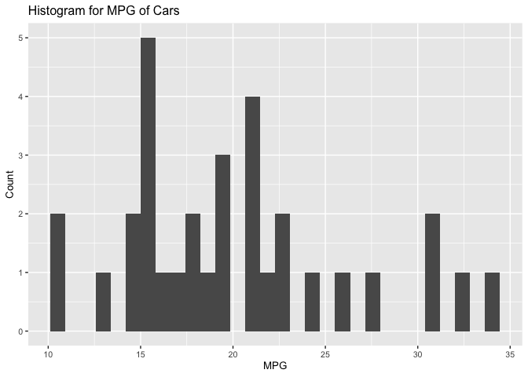
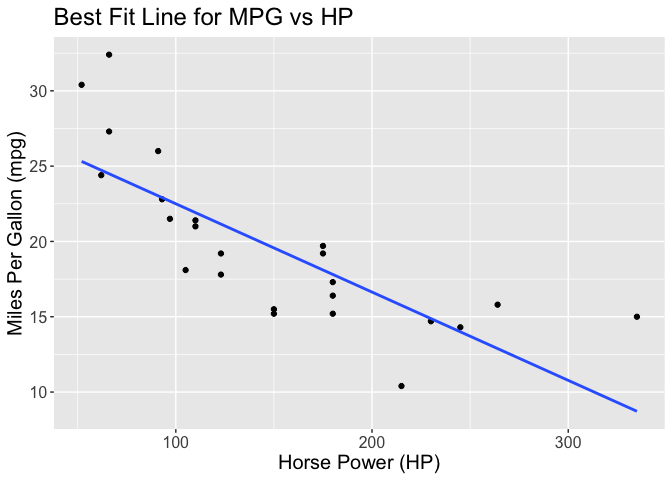

The goal of ln.knn.regression is to assist in creating a regression analysis project from start to finish. It includes functions that help to explore, summarize and visualize the data. It also includes functions that directly build and visualize linear and k-nn models. Additionally, it contains functions that can test the model’s error and accuracy.
Installation
You can install the development version of ln.knn.regression from GitHub with:
# install.packages("devtools")
devtools::install_github("DSCI-310/dsci-310-group-09-pkg")Functions
bar_graph()hist_plot()knn_model()linearmodel()model_rmspe()- `scatter_plot()
summarize_column()
Example
This is a basic example which shows you how to explore the data and build a linear regression model.
1. EDA
library(ln.knn.regression)
summarize_column(mtcars, mtcars$mpg)
#> mean med sd
#> 1 20.09062 19.2 6.026948
hist_plot(mtcars, mpg, "MPG", "Count", "Histogram for MPG of Cars", 10)
#> `stat_bin()` using `bins = 30`. Pick better value with `binwidth`.
2. Model Building
mtcars_model <- linearmodel(recipes::recipe(mpg ~ hp, mtcars_training), mtcars_training)
mtcars_model
#> ══ Workflow [trained] ══════════════════════════════════════════════════════════
#> Preprocessor: Recipe
#> Model: linear_reg()
#>
#> ── Preprocessor ────────────────────────────────────────────────────────────────
#> 0 Recipe Steps
#>
#> ── Model ───────────────────────────────────────────────────────────────────────
#>
#> Call:
#> stats::lm(formula = ..y ~ ., data = data)
#>
#> Coefficients:
#> (Intercept) hp
#> 28.36292 -0.058633. Visualizations
scatter_plot(mtcars_training,
hp,
mpg,
"Horse Power (HP)",
"Miles Per Gallon (mpg)",
"Best Fit Line for MPG vs HP",
15,
"lm")
#> `geom_smooth()` using formula = 'y ~ x'
4. Finding model’s accuracy
mtcars_rmspe <- model_rmspe(mtcars_model, mtcars_testing, "mpg")
mtcars_rmspe
#> [1] 4.99694This tells us that the model has a prediction error of around 5 miles per gallon when tested on data it has not seen before.
Contributing
We appreciate contributions to the ln.knn.regression package. Please refer to our Contributing document and Code of Conduct for more information.
License
The software provided in this project is offered under the MIT open source license. Refer to the license file for more information.